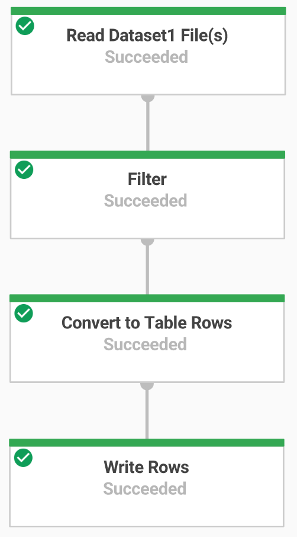
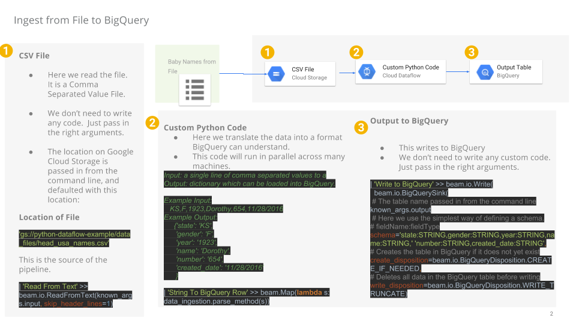
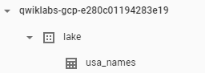

In this lab, you will build a Dataflow Flex Template.
To complete this lab, you need:
This codelab is focused on Dataflow Flex Template. Non-relevant concepts and code blocks are glossed over and are provided for you to simply copy and paste.
If you don't have a GCP Project, follow these steps to create a new GCP Project.
Dataflow templates allow you to stage your pipelines on Google Cloud and run them using the Google Cloud Console, the gcloud command-line tool, or REST API calls.
Classic templates are staged as execution graphs on Cloud Storage while Flex Templates package the pipeline as a Docker image and stage these images on your project's Container Registry. You can use one of the Google-provided templates or create your own.
Templates provide you with additional benefits compared to non-templated Dataflow deployment, such as:
Flex Templates.
Developers package the pipeline into a Docker image and then use the gcloud command-line tool to build and save the Flex Template spec file in Cloud Storage.
Flex Templates bring more flexibility over classic templates by allowing minor variations of Dataflow jobs to be launched from a single template and allowing the use of any source or sink I/O.
The execution graph for Flex Templates is dynamically built based on runtime parameters provided by the user when the template is executed. This means that when you use Flex Templates, you can make minor variations to accomplish different tasks with the same underlying template, such as changing the source or sink file formats.
In this codelab, we will be using Google Cloud Console.
Run the following command to get Dataflow Python Examples from Google Cloud's professional services GitHub:
gsutil -m cp -R gs://spls/gsp290/dataflow-python-examples .Now set a variable equal to your project id, replacing <YOUR-PROJECT-ID> with your lab Project ID:
export PROJECT=<YOUR-PROJECT-ID>
gcloud config set project $PROJECTUse the make bucket command to create a new regional bucket in the us-central1 region within your project:
gsutil mb -c regional -l us-central1 gs://$PROJECTUse the gsutil command to copy files into the Cloud Storage bucket you just created:
gsutil cp gs://spls/gsp290/data_files/usa_names.csv gs://$PROJECT/data_files/
gsutil cp gs://spls/gsp290/data_files/head_usa_names.csv gs://$PROJECT/data_files/In this step you create a BigQuery dataset called lake to store your data. To create your dataset, follow these steps:
OR
Use bq command:
export REGION="us-central1"
DATASET_ID="lake"
bq --location=$REGION mk \
--dataset \
$PROJECT:$DATASET_ID
In this section you will create an append-only Dataflow which will ingest data into the BigQuery table. You can use the built-in code editor which will allow you to view and edit the code in the Google Cloud console.

Open Code Editor
Navigate to the source code by clicking on the Open Editor icon in Cloud Shell:
If prompted click on Open in a New Window. It will open the code editor in a new window.
You will now build a Dataflow pipeline with a TextIO source and a BigQueryIO destination to ingest data into BigQuery. More specifically, it will:
In the Code Editor navigate to dataflow-python-examples > dataflow_python_examples and open the data_ingestion.py file. Read through the comments in the file, which explain what the code is doing. This code will populate the data in BigQuery.

Return to your Cloud Shell session for this step. You will now do a bit of set up for the required python libraries.
Run the following to set up the python environment:
cd dataflow-python-examples/
# Here we set up the python environment.
# Pip is a tool, similar to maven in the java world
sudo pip install virtualenv
#Dataflow requires python 3.7
virtualenv -p python3 venv
source venv/bin/activate
pip install apache-beam[gcp]==2.27.0You will run the Dataflow pipeline in the cloud. The following will spin up the workers required, and shut them down when complete:
python dataflow_python_examples/data_ingestion.py --project=$PROJECT --region=us-central1 --runner=DataflowRunner --staging_location=gs://$PROJECT/test --temp_location gs://$PROJECT/test --input gs://$PROJECT/data_files/head_usa_names.csv --save_main_sessionReturn to the Cloud Console and open the Navigation menu > Dataflow to view the status of your job.
Click on the name of your job to watch it's progress. Once your Job Status is Succeeded. Navigate to BigQuery (Navigation menu > BigQuery) see that your data has been populated.
Click on your project name to see the usa_names table under the lake dataset.

Click on the table then navigate to the Preview tab to see examples of the usa_names data.
Note: If you don't see the usa_names table, try refreshing the page or view the tables using the classic BigQuery UI.
Use the gsutil mb command:
export BUCKET="my-storage-bucket"
gsutil mb gs://$BUCKETgit clone https://github.com/GoogleCloudPlatform/python-docs-samples.git
cd python-docs-samples/dataflow/flex-templates/streaming_beam
cp ~/dataflow-python-examples/dataflow_python_examples/data_ingestion.py ~/python-docs-samples/dataflow/flex-templates/streaming_beam/data_ingestion.py
cd python-docs-samples/dataflow/flex-templates/streaming_beamexport DATASET="lake"
export TABLE="usa_names_template"export TEMPLATE_IMAGE="gcr.io/$PROJECT/samples/dataflow/batch-ingestion-beam:latest"gcloud config set builds/use_kaniko True FROM gcr.io/dataflow-templates-base/python3-template-launcher-base
ARG WORKDIR=/dataflow/template
RUN mkdir -p ${WORKDIR}
WORKDIR ${WORKDIR}
# Due to a change in the Apache Beam base image in version 2.24,
# you must install
# libffi-dev manually as a dependency. For more information:
# https://github.com/GoogleCloudPlatform/python-docs-samples/issues/4891
RUN apt-get update && apt-get install -y libffi-dev && rm -rf /var/lib/apt/lists/*
COPY requirements.txt .
COPY streaming_beam.py .
ENV FLEX_TEMPLATE_PYTHON_REQUIREMENTS_FILE="${WORKDIR}/requirements.txt"
ENV FLEX_TEMPLATE_PYTHON_PY_FILE="${WORKDIR}/data_ingestion.py"
RUN pip install -U -r ./requirements.txtImages starting with gcr.io/PROJECT/ are saved into your project's Container Registry, where the image is accessible to other Google Cloud products.
gcloud builds submit --tag $TEMPLATE_IMAGE .To run a template, you need to create a template spec file in a Cloud Storage containing all of the necessary information to run the job, such as the SDK information and metadata.
The metadata.json file in this example contains additional information for the template such as the name, description, and input parameters fields.
#cd python-docs-samples/dataflow/flex-templates/streaming_beam
{
"name": "Batch ingestion beam Python flex template",
"description": "Batch ingestion beam example for python flex template.",
"parameters": [
{
"name": "input",
"label": "Input file.",
"helpText": "Name of the input file to consume from.",
"regexes": [
"gs://[^/]+/data_files/[a-zA-Z][-_.~+%a-zA-Z0-9]{2,}"
]
},
{
"name": "output",
"label": "BigQuery output table name.",
"helpText": "Name of the BigQuery output table name.",
"isOptional": true,
"regexes": [
"[^:]+:[^.]+[.].+"
]
}
]
}
export TEMPLATE_PATH="gs://$BUCKET/samples/dataflow/templates/batch-ingestion-beam.json"
gcloud dataflow flex-template build $TEMPLATE_PATH \
--image "$TEMPLATE_IMAGE" \
--sdk-language "PYTHON" \
--metadata-file "metadata.json"
The template is now available through the template file in the Cloud Storage location that you specified.
You can now run the Apache Beam pipeline in Dataflow by referring to the template file and passing the template parameters required by the pipeline.
export REGION="us-central1"
DATA_BUCKET="gs://"$BUCKET"/data_files/usa_names.csv"
gcloud dataflow flex-template run "batch-ingestion-`date +%Y%m%d-%H%M%S`" \
--template-file-gcs-location "$TEMPLATE_PATH" \
--parameters input=$DATA_BUCKET \
--parameters output="$PROJECT:$DATASET.$TABLE"After you execute the command to run the Flex Template, the Dataflow returns a Job ID with the job status Queued. It might take several minutes before the job status reaches Running and you can access the job graph.
bq query --use_legacy_sql=false 'SELECT * FROM `'"$PROJECT.$DATASET.$TABLE"'`'To avoid incurring charges to your Google Cloud Platform account for the resources used in this tutorial:
You've done a lot in this lab 👏👏👏
To recap, you've learned how to: